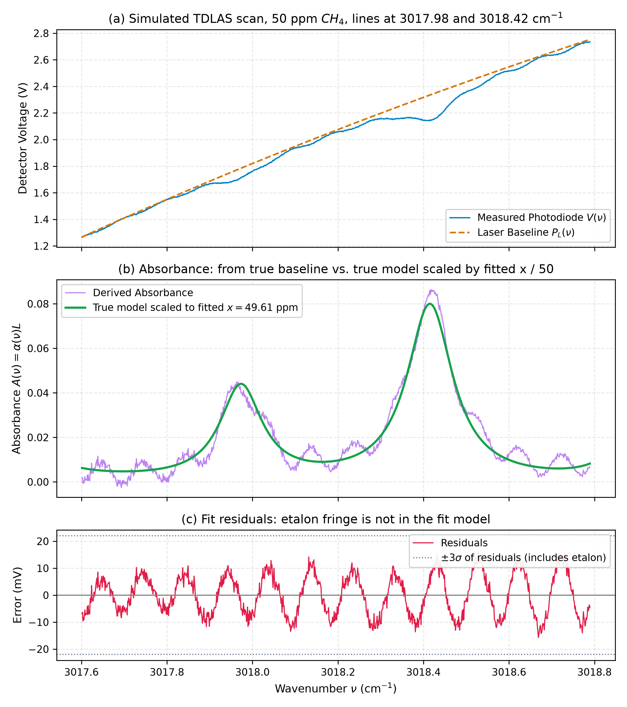
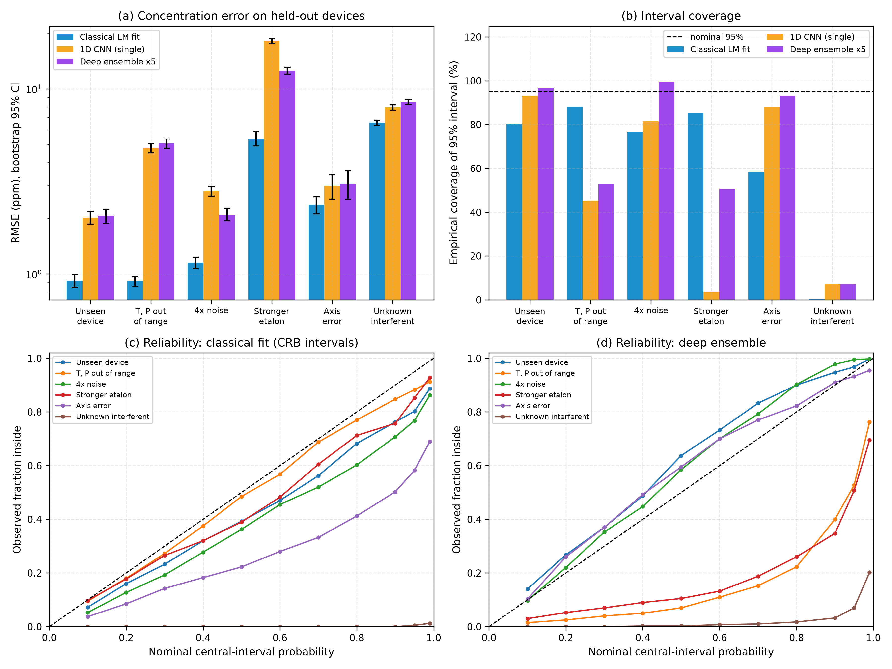
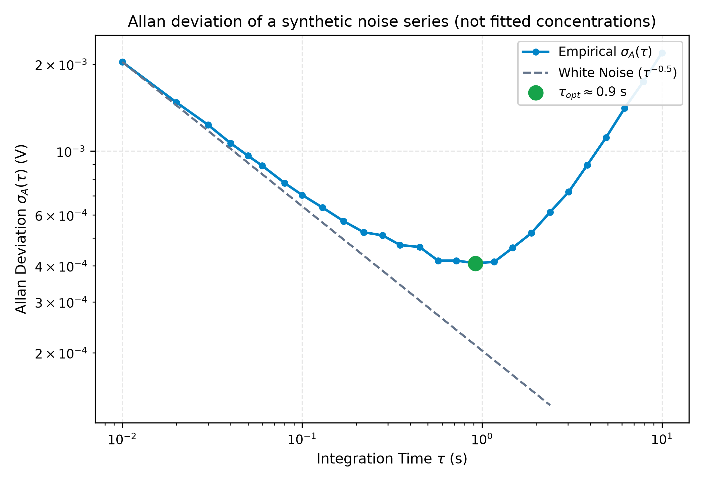
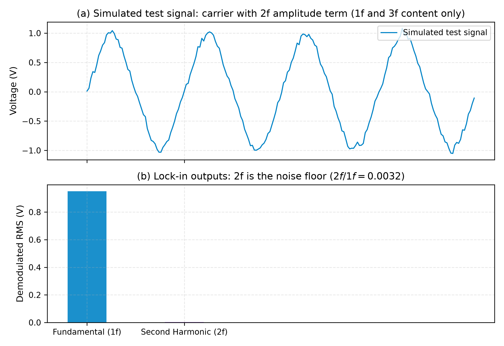

TDLAS Mid-IR Methane Spectroscopy Technical Report
4 hand-entered CH4 lines (not verified against HITRAN)
3018 cm⁻¹ (3313 nm)
Weideman Faddeeva
Levenberg-Marquardt
Simulated data, assumed 70 cm path
Figure 1: Spectroscopy Transmission, Analytical Voigt Profile, and Residuals

Figure 1: One simulated scan (50 ppm) fitted with the Levenberg-Marquardt code (analytical Jacobian for concentration and baseline polynomial). The etalon fringe is not in the fit model, so the residuals show a periodic pattern of about ±15 mV, and the plotted ±3σ band is computed from these residuals and is therefore much wider than the white noise alone. In panel (b) the "derived absorbance" divides by the true simulated baseline, and the curve labelled fit is the true absorbance scaled by fitted x / 50.
Figure 2: Methodological Benchmark — Physics-Informed Inversion vs. Deep Ensembles

Figure 2: Results of scripts/run_ml_benchmark.py (docs/results/ml_benchmark.json): classical Levenberg-Marquardt fit vs a 1D CNN and a 5-member deep ensemble trained on 60 simulated devices (validation: 20, test: 20 held-out devices, 400 scans per scenario). The classical fit has the lower RMSE in 6 of 6 scenarios. Nominal 95% coverage ranges from 0% to 88% for the classical fit and from 7% to 100% for the ensemble. The CNN is small, trained on simulated data only, with a 3-value learning-rate search, so these numbers do not bound what a better-tuned network could do.
Figure 3: Allan-Werle Deviation and Metrological Stability

Figure 3: Allan deviation (non-overlapping blocks) of a hand-built synthetic series at 100 Hz: white noise 2 mV, pink noise 0.8 mV rms and a linear drift of 0.3 mV/s. It is not a series of fitted concentrations, and the axis is in volts. The slope over the first points is about -0.46 (the pink noise already bends it), the minimum is 0.41 mV at about 0.9 s, and the rise at longer times comes from the added drift. For pure white noise the same code gives a slope of -0.503.
Figure 4: Software Dual-Phase Lock-In Demodulation (1f and 2f WMS)

Figure 4: Software lock-in applied to a simulated test signal: a 1 kHz carrier multiplied by a slowly varying amplitude term containing cos(2·2π·1 kHz·t), plus noise. This signal contains only 1f and 3f components, so the 2f channel shows the noise floor (2f/1f ≈ 0.003), not an absorption signal. It is not a wavelength-modulation spectroscopy simulation, and no concentration is retrieved.